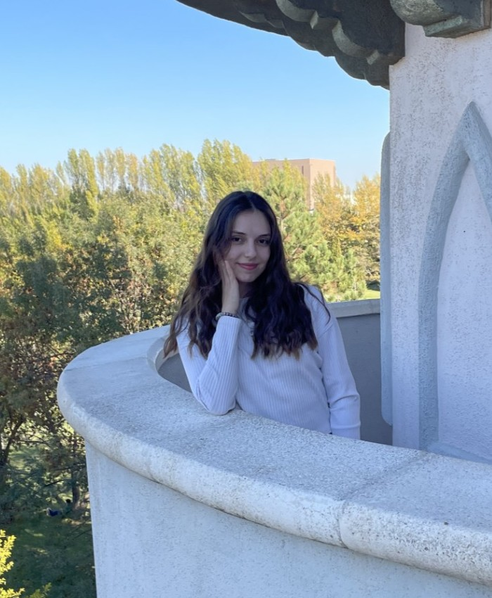

Tasarım ve teknolojiye olan ilgim çocukluk yıllarıma dayanıyor. Bu ilgi, zamanla bilinçli bir yönelim haline gelerek beni Endüstriyel Tasarım Mühendisliği alanına yönlendirdi. Gazi Üniversitesi’nde sürdürdüğüm lisans eğitimim süresince edindiğim teorik bilgileri, pratik deneyimlerle pekiştirmeye önem verdim. Estetik anlayışı ve işlevselliği bir arada değerlendirerek, kullanıcı odaklı ve sürdürülebilir çözümler geliştirmeyi hedefliyorum.
Şimdiye dek toplamda 110 iş günü süren staj deneyimi ile tasarım disiplininin farklı alanlarında bilgi ve beceriler kazandım. Savunma sanayii, raylı sistemler ve medikal cihazlar gibi yüksek hassasiyet ve güvenlik gerektiren sektörlerde stajlar yaparak, bu alanların teknik beklentilerini ve tasarım kriterlerini yakından tanıma fırsatı buldum.
Şu anda, kent mobilyaları ve çocuk oyun alanları tasarımı üzerine çalışan bir firmada aday mühendis olarak görev alıyor, gerçek projelerin konsept geliştirme, teknik çizim, modelleme ve üretim süreçlerinde aktif rol alıyorum. Takım çalışmasına yatkınlığım ve detaylara verdiğim önem sayesinde, hem yaratıcı hem de uygulanabilir çözümler üretmeye odaklanıyorum.
Eğitim sürecim boyunca geliştirdiğim kişisel projelerim, üniversite kapsamında gerçekleştirdiğim çalışmalar ve staj/iş deneyimlerim, profesyonel gelişimimi destekleyen önemli adımlar oldu. Tüm bu projeleri ve detaylarını, bu web sitesinde yer alan "Projelerim" başlığı altında inceleyebilirsiniz.